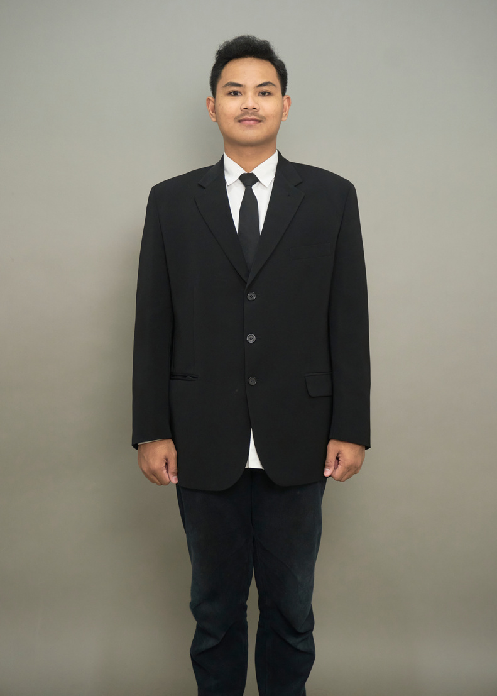

Jun 2025 — Sekarang
Web Administrator & Developer
Yayasan Haadii Nurul Ikhlas
Mengelola dan memelihara situs yhniyogya.or.id, termasuk merancang dan membangun fitur baru untuk mendukung kebutuhan operasional yayasan sehari-hari.
Fresh Graduate Informatika — Universitas Ahmad Dahlan
Machine Learning & Deep Learning / System Automation / Web Development
Mengubah data mentah — iklim, perilaku pengguna, teks — menjadi sistem yang bekerja: model prediksi, pipeline otomasi, dan produk digital yang bisa dipakai orang banyak.

“Sesungguhnya bersama kesulitan ada kemudahan.”
Lulusan baru Program Studi Informatika, Universitas Ahmad Dahlan, dengan ketertarikan yang bermula dari rasa penasaran dan kini tumbuh menjadi motivasi nyata untuk membangun sistem berbasis data. Meyakini kedisiplinan sebagai pondasi utama, dan aktif berorganisasi sejak SMA hingga kuliah — membentuk kebiasaan komunikasi formal dan kolaborasi tim yang terbawa ke setiap proyek.
Pengalaman kerja dan proyek kuliahnya bergerak di tiga jalur yang saling terhubung: machine learning & deep learning untuk masalah nyata (prediksi banjir, rekomendasi wisata), otomasi sistem untuk efisiensi operasional (n8n, WhatsApp Business automation), dan pengembangan web untuk membungkusnya menjadi produk yang bisa dipakai.
Yayasan Haadii Nurul Ikhlas
Mengelola dan memelihara situs yhniyogya.or.id, termasuk merancang dan membangun fitur baru untuk mendukung kebutuhan operasional yayasan sehari-hari.
PT Aksoro Sabda Nusantara
Menganalisis kebutuhan klien, melakukan prompt engineering dan training AI, serta membangun pipeline otomasi n8n dengan output WhatsApp Business Automation.
Tim Developer UpToSky Digital
Merancang arsitektur sistem, alur mekanisme, dan ERD basis data, serta menyusun dokumentasi teknis sebagai acuan pengembangan tim.
DBS Foundation
Menguasai modul machine learning secara bertahap dan mengimplementasikannya dalam proyek capstone kelompok berupa sistem rekomendasi wisata "TripTaktik".
Universitas Ahmad Dahlan
Universitas Ahmad Dahlan
Model prediksi banjir berbasis LSTM untuk 88 desa, dibangun dari fusi data iklim Google Earth Engine dan ekstraksi topografi spasial menggunakan QGIS.
flood-risk-predictionModel rekomendasi wisata menggunakan arsitektur Siamese Network, di-deploy dalam format .tflite agar dapat diintegrasikan langsung ke website. Proyek capstone kelompok pada Coding Camp DBS Foundation.
model-rekomendasi-jogja-submission-farisWebsite informasi botani desa yang terintegrasi dengan pemindaian QR Code untuk digitalisasi flora lokal — dikembangkan dalam program KKN Universitas Ahmad Dahlan.
flora-kkn-uad-2026Latihan & submission lain di GitHub